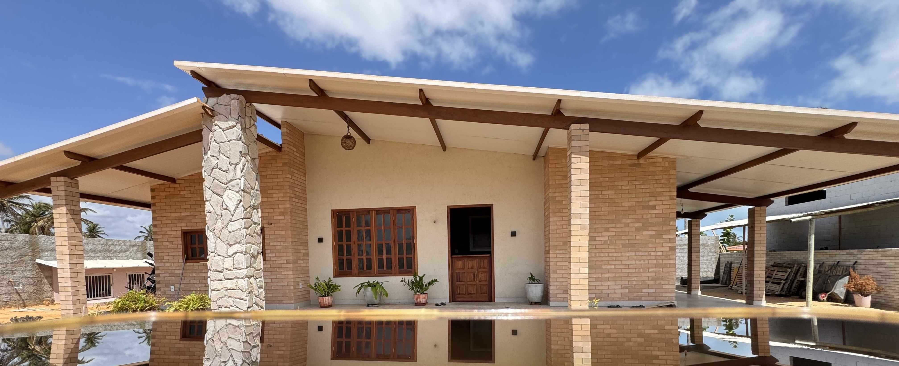

Sobre o conteúdo
Você gosta do conceito dos tijolos ecológicos, mas tá em dúvida se deve
mergulhar de cabeça...
Sua resposta está no Manual do Tijolo EcoLógico!
Ele vai te mostrar a real LÓGICA que há por trás, para que os tijolos cumpram o que
prometem, incluindo:
-Redução de até 40% dos custos da obra.
-Redução de até 50% no tempo de construção.
-Estética única e múltiplas formas de utilização.
-Redução de 70% do uso de água no processo.
-Isolamento térmico e acústico superior.
-Redução da pegada de carbono.
-Utilização de recursos locais, contribuindo para o desenvolvimento econômico das
comunidades.
-Lucros a partir da fabricação, venda e execução das obras.
Mas calma, o caminho para esses resultados, não cai do céu!
Justamente para que você não surte buscando informações espalhadas pela internet, reunimos
no Manual tudo que gostaríamos de saber quando a gente decidiu usar os tijolos eco. Foram
muitos obstáculos, em meses e meses de dedicação e estudo, mas destacamos todos os pontos
sensíveis para que você evite frustrações!
Uma vez que você pega o jeito, ninguém segura sua produção, nem sua obra! Lidar com
os tijolos ecológicos pode ser bem fácil e para garantir que até mesmo quem nunca construiu
possa entender direitinho todas as etapas do processo, fizemos questão que o material fosse
ilustrado, com linguagem acessível e bastante didático!
Desde a seleção e preparação do solo, a prensagem dos tijolos, assentamento, instalação de
serviços e muito mais. Descubra como calcular as proporções ideais de solo, cimento e cal,
realizar testes de qualidade e aplicar técnicas de cura controlada para resultar em tijolos
resistentes.
Baseados na experiência técnica e prática, pensamos em detalhes, dicas e pontos de atenção
para garantir que você se saia melhor que a gente!
Já estamos ansiosos para te ver produzir lindas obras, com qualidade, durabilidade e
escolhas de materiais inteligentes!
